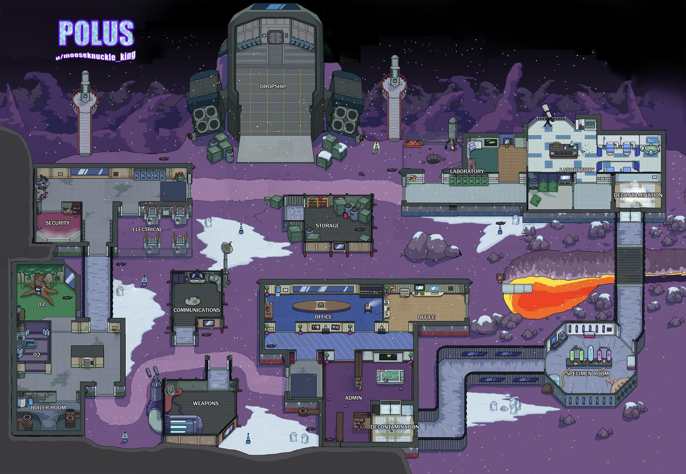

Descendez pour découvrir la présentation de la Map!▾
Polus est l'une des 3 maps présentes de Among Us (pré-patch). Cette map possède 15 salles, est situé dans un colonie extra-terrestres, vous pouvez donc allez en intérieur comme en extérieur. Le spawn est dans le vaisseau d'arrivée, tout en haut. Cette map dispose d'une salle de caméra et d'une table d'admin. Les Imposteurs ont a leur disposition des fermetures de portes à mini-quête (différent des fermetures de portes dans The Skeld, qui elles se réouvrir après un certain temps). Les sabotages présents sont : Lights, Sismic, Comms et O2 (voir plus dans les salles ayant un sabotage.)
Quêtes !
Ce qui suit est une liste de toutes les quêtes présentes sur Polus, salle par salle.
Vous pouvez aussi accéder à chaque salle en cliquant dessus sur la carte ci-dessus.
Quêtes dans la navette:

Les Clés
La quête des clés est plutôt simple, pour ce faire, il vous suffit de mettre les clés (qui vous seront affichées à l'écran) dans las serrure, puis de la tourner : Voilà ! C'est terminé.

Le Vaisseau
Dans cette quête, vous allez devoir emmener un vaisseau virtuel à bon port ! En utilisant votre souris, attrapez le petit vaisseau et faites le suivre la route dessiner pour le faire arriver jusqu'à la fin de son parcours. Lorsqu'il sera arrivé, la quête sera terminée et la barre de complétion des tâcehs avancera. Attention, cette quête est plûtot difficile et peut être très longue à finir si on prend en compte la sensibilité du vaisseau. En effet, soyez extrement précis car ce vaisseau doit suivre exactement la route tracée, un seul petit écart et vous devez recommencer.
Quêtes dans Laboratoire:


Partie gauche du Laboratoire
Partie intermédiaire du Laboratoire


Partie de droite (aussi appellée Medbay)

La température
La quête de la température consiste à ajuster la température que vous aurez à droite avec celle de gauche, pour ce faire, vous pouvez utiliser les flèches qui seront affichées à l'écran

Le télescope !
Dans cette quête,vous devez trouver l'objet affiché en bas à gauche de votre écran à l'aide d'un télescope, quand l'objet sera trouvé, la barre de complétion des tâches avancera .

Réparer la foreurse
Ici, votre objectif est d'appuyer plusieurs fois sur chaque carré rouge jusqu'à ce qu'ils disparraissent, si vous avez bien fait la manipulation, la quête devrait être complétée.

Les câbles
La quête des câbles est une quête en plusieurs étapes. Lorsque vous effectuez la quêtes des câbles, un autre emplacement de cette quête vous est révelé sur la carte. Vous devez la faire 3 fois pour valider entiérement la quête et faire avancer la barre de complétion des tâches. Vous devez ici étirer chaques fils de gauche vers leur équivalent à droite pour réparer le problème.

Le Labyrinthe
Cette quête s'effectue en 2 parties. D'abord,vous devez accomplir un petit labyrinthe qui se trouve dehors, attention, si vous vous trompez de chemin vous ne pouvez pas repartir en arrière, vous devez recommencer cette étape. Après avoir fait cela, allez au laboratoir pour redémarrer le système, pour ce faire, vous devez appuyer sur un bouton, ce qui, au passage, vous terminera votre quête .

Le Scan
Dans cette quête, vous devez vous faire scanner pendant plusieurs secondes. A la fin du scan, la quête est validée et la barre de complétion des tâches avance.

Les Fioles
Cette quête n'est pas instantanée. En effet, après être allé pour la première fois sur cette quête, vous lancerez un décompte de 1 minute. Lorsque ce décompte sera terminé, retournez à cette quête pour la valider et faire avancer la abrre de complétion des tâches. Il est donc conseillé de regarder en début de partie si cette quête est nécessaire et d'aller lancer le décompte en premier
Quêtes dans la décontamination:
Les câbles
La quête des câbles est une quête en plusieurs étapes. Lorsque vous effectuez la quêtes des câbles, un autre emplacement de cette quête vous est révelé sur la carte. Vous devez la faire 3 fois pour valider entiérement la quête et faire avancer la barre de complétion des tâches. Vous devez ici étirer chaques fils de gauche vers leur équivalent à droite pour réparer le problème.
Quêtes dans Specimen Room:

Le Tri d'Artefacts
Dans la quête du tri, vous devez amener plusieurs artefacts dans des cases ayant leur forme : une feuille, un crâne, un diamant et une gemme violette.

Le Télechargement
La quête du télechargement est une quête en 2 étapes. Pour la réussir, vous devez cliquer sur le bouton télechargement et attendre que celui ci se termine. Ensuite, vous devez aller à admin pour terminer cette quête et faire avancer la barre de complétion des tâches.

Le compte est bon
Dans cette quête, vous devez compter de 1 à 10.

Simon
Cette quête est inspirée du jeu Simon, et vous devrez ici reproduire une séquence de position donnée 5 fois, de plus en plus dure. Si vous ratez une seule position, la quête recommence à 0, donc faites bien attention et concentrez vous ! Si vous réussisez à reproduire les 5 séquences, la quête est validée et la barre de complétion des tâches avance.
Quêtes dans Admin:


La table d'Admin
Cette table n'est pas une quête, mais un outil essentiel pour une partie interessante. En effet, cette table vous permet de regarder la même map que vous possedez en appuyant sur "TAB", mais en y ajoutant le nombre de joueurs dans chaque salle. Vous ne voyez pas les pseudos ou skins des joueurs sur cette table, mais vous pouvez avoir un aperçu de où sont vos alliés ainsi que vos ennemis. N'hésitez pas à beaucoup l'utiliser, elle vous permettra de repérer plus facilement des menteurs durant la phase de vote. Lorsque vos quêtes sont entièrement complétés, restez le plus possible sur la table d'Admin ou aux Caméras !
En tant qu'imposteur, cette table est un obstacle mais aussi un outil. Vous pouvez l'utiliser pour voir si une opportunité de kill discret est présente par rapport aux positions de tous les joueurs. Faites cependant attention, si vous comptez mentir sur vos positions pour vous couvrir durant la phase de vote, vérifiez bien que personne ne sois resté assez longtemps sur cette table pour vous avoir repéré.
Quêtes dans Office:


Salle de réunion d'admin, où se situe aussi le bouton
Partie droite de l'Office
Le Télechargement
La quête du télechargement est une quête en 2 étapes. Pour la réussir, vous devez cliquer sur le bouton télechargement et attendre que celui ci se termine. Ensuite, vous devez aller à admin pour terminer cette quête et faire avancer la barre de complétion des tâches.

Les Câbles
La quête des câbles est une quête en plusieurs étapes. Lorsque vous effectuez la quêtes des câbles, un autre emplacement de cette quête vous est révelé sur la carte. Vous devez la faire 3 fois pour valider entiérement la quête et faire avancer la barre de complétion des tâches. Vous devez ici étirer chaques fils de gauche vers leur équivalent à droite pour réparer le problème.

La Carte
Cette quête est l'une des plus célèbres du jeu à cause de sa difficulté. En effet, dans cette quête, vous devez prendre la carte de votre portefeuille et la faire glisser dans le lecteur. Cependant, vous ne devez aller ni trop vite, ni trop lentement et sans vous arrêter. SI vous n'êtes pas habitués à effectuer cette quête, elle vous prendra plusierus essais. Entrainez vous à la maitriser pour la réussir du premier coup pendant vos parties !

Remplacer l'eau
Afin de terminer cette quête, vous devez appuyer sur le bouton rouge en haut de l'écran et le maintenir jusqu'à ce que la bombonne d'eau soit remplie au maximum (Cette quête est en 2 parties car vous devez aller à la chaufferie puis dans le bureau

Scanner le pass d'embarquement
Pour finir cette quête, vous devez scanner votre pass devant le lecteur qui apparaît en rouge, il y a pour cela 3 étapes : vous devez faire apparaître votre carte, puis la retourner et enfin la placer devant le scanner, si tout cela est bien fait, votre tâche devrait être finie

Emergency Meeting
Le bouton d'Emergency permet à un joueur d'arrêter la partie pour lancer une discussion et un vote d'élimination comme si un corps avait été trouvé. Utilisez ce bouton lorsque vous avez des suspitions fondées! (par exemple, si vous avez vu un autre joueur utiliser une vent, courez vers le bouton et dénoncez le aux autres!!). Attention! Ce bouton ne peut être utilisé qu'UNE seule fois par personne!
Lorsque vous êtes imposteur, si vous pensez que quelqu'un a trop de doutes sur vous, faites attention a ce bouton pour éviter qu'un joueur n'appuie dessus pour vous incriminer!
Quêtes dans Storage:

Le Bidon
Cette quête s'effectue en 4 parties. D'abord, remplissez votre bidon dans storage, puis allez le videz dans le réservoir qui se situe dehors.Lorsque le réservoir est rempli, la quête est réussie et la barre de complétion des quêtes avance.
Quêtes dans Weapons:

Les Asteroïdes!!!
cette quête, des asteroïdes vont passer sur votre écran de droite à gauche et votre but est de tirer dessus avec votre souris! Détruisez 20 asteroïdes avec votre clic gauche pour terminer la mission et faire avancer la barre de complétion des tâches.
Le Télechargement
La quête du télechargement est une quête en 2 étapes. Pour la réussir, vous devez cliquer sur le bouton télechargement et attendre que celui ci se termine. Ensuite, vous devez aller à admin pour terminer cette quête et faire avancer la barre de complétion des tâches.
Quêtes dans Communications:
Le Télechargement
La quête du télechargement est une quête en 2 étapes. Pour la réussir, vous devez cliquer sur le bouton télechargement et attendre que celui ci se termine. Ensuite, vous devez aller à admin pour terminer cette quête et faire avancer la barre de complétion des tâches.

Relancer le Wifi
Pour mener cette tâche à bien, vous devez tirer le levier rouge situé à droite, vers le bas, puis attendre 1 minute et faire l'action inverse, pendant cette minute d'attente, vous pouvez partir vaquer à vos occupations.Cette quête est très similaire à celle des fioles sur The Skeld

Y a Quelqu'un au bout du fil ?
Ce sabotage des Imposteurs empêche à tous les Crewmates de voir leurs objectifs restants et d'utiliser les caméras ou la table d'Admin. Pour tout réparer, rendez vous dans les Comms et tournez la molette jusqu'a trouver le point où les fréquences reviennent à la normale.
En tant qu'imposteur, ce sabotage permet de mettre un frein sur le tempo de la partie, car les Crewmates doivent le réparer avant de continuer à faire leur quêtes, ce qui vous permet de gagner du temps pour vos meurtres sans que la barre de complétion des tâches n'avance. Si vous voulez faire un kill dans un endroit où des caméras sont posés, sabotez les comms pour pouvoir tuer sans être vu !